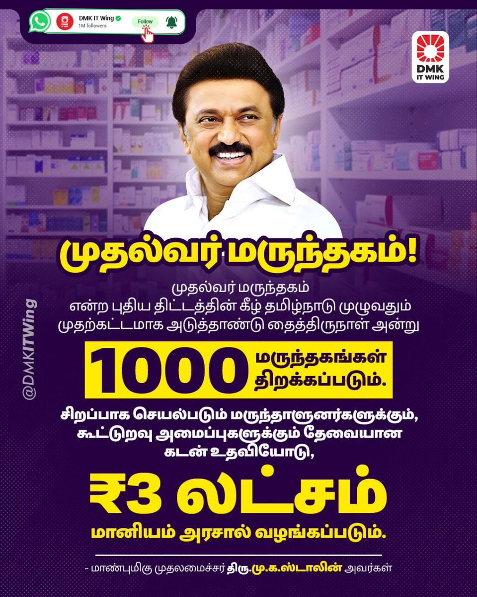

Mudhalvar Marundhagam
Mudhalvar Marundhagam is an initiative by the Tamil Nadu government aimed at improving public health accessibility and affordability through targeted interventions.
Objective
The primary goal of Scheme 7 is to ensure essential healthcare services reach all segments of the population, with a special focus on underprivileged communities.
Benefits
- Affordable Healthcare: The scheme aims to provide medical services at minimal or no cost to the economically weaker sections.
- Expanded Reach: Establishment of additional healthcare centers in remote areas to improve accessibility.
- Quality Medical Support: Ensuring high standards in healthcare services, medicine distribution, and medical facilities.
Implementation
Launched by: The Tamil Nadu government under the leadership of Chief Minister M.K. Stalin.
Execution:
- Implemented through government hospitals, PHCs, and partner healthcare organizations.
- Monitored by the Health Department to ensure efficient operation and accountability.
- Special focus on maternal and child health services.
Target Group: The primary beneficiaries include low-income families, senior citizens, and individuals with chronic illnesses.
Significance
Scheme 7 plays a crucial role in strengthening the healthcare system by providing cost-effective medical treatment and ensuring equitable access to health services.
The success of this initiative will depend on sustainable funding, efficient implementation, and public awareness.
Eligibility and Application Process
- Open to all residents of Tamil Nadu meeting the income and health condition criteria.
- Applicants must submit identification and income proof for verification.
- Healthcare centers will process applications and issue health cards to beneficiaries.
Documents Required
- Aadhar Card
- Income Certificate
- Medical Records (if applicable)
- Residence Proof
Implementation Partners
The scheme is being implemented in collaboration with government hospitals, NGOs, and private healthcare providers to ensure wide coverage and quality service delivery.
Contact Information
For more details, visit your nearest government hospital or check the official website of the Tamil Nadu Health Department.
